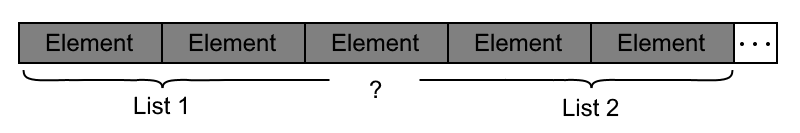
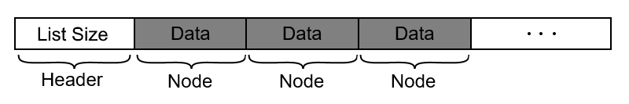
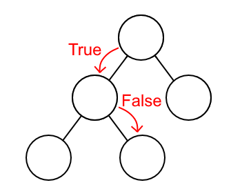
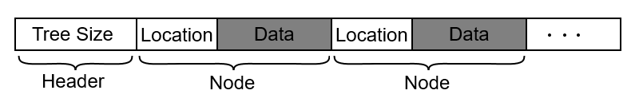
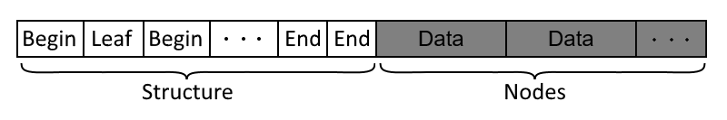
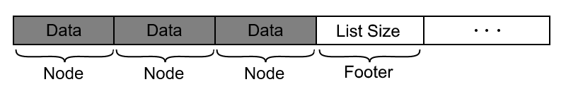

March 28, 2018
Serialization converts in-memory data to an external representation, typically a list or stream of bytes, which is then ready to be stored on disk or sent over the network.
This post describes Cheerios, a verified library for serialization in Coq. Cheerios uses typeclasses to make it easy to create new serializers by composing existing serializers, such that the correctness proofs also compose. We first give an overview of the core definitions of Cheerios and show how to build simple serializers for booleans, natural numbers, and pairs. Then, we describe two generic strategies for serializing recursive “container-like” types, such as lists and trees, and discuss the tradeoffs in proof effort between the strategies. A recurring theme is the challenge of expressing decoders via structural recursion.
Additionally, this post is generated from a literate Coq file, which we encourage you to step through.
Inductive medal := Gold | Silver | Bronze.
We need to map each case to a symbol of bits and return that. There are many ways this could be done, each with different trade offs as we will explore later, but we just need to pick one.
Definition medal_serialize (m: medal) : list bool :=
match m with
| Gold => [true; true]
| Silver => [true; false]
| Bronze => [false]
end.
Perfect, as it turns out, this type will be exactly what we need.
Now we need to determine a type for the deserializer. We want something that acts as an inverse to the serialization function we picked. At first thought, list bool -> A seems like a good option. This would allow our spec to be deserialize (serialize a) = a. However as we will see this runs into problems pretty quickly.
Coq catches the mistake and points out that the bools are not exaustively matched on. What if they’re empty? Fundamentally, we run into this problem because not every sequence of booleans decodes into a medal. Even non-empty sequences such as [false; true] pose issues. Since these sequences are not produced by the serializer, we can consider them to be erronious. In cheerios we handle this case by returning the option constructor None to indicate an error.
This makes the spec become deserialize (serialize a) = Some a, ie deserialization on any serialized stream always succeedes and returns the correct value.
Definition medal_deserialize1 (bools: list bool):option medal :=
match bools with
| [true; true] => Some Gold
| [true; false] => Some Silver
| [false] => Some Bronze
| _ => None
end.
This works for a single medal being encoded in the bitstream, but we again run into problems when we try and implement a more complicated type like a pair of medals reusing the work from above. Serialization works just fine, but deserialization is problematic.
Definition medal_serialize_pair (medals: medal * medal) :=
medal_serialize (fst medals) ++ medal_serialize (snd medals).
Fail Definition medal_deserialize_pair (bools: list bool)
: option (medal * medal) :=
(medal_deserialize1 bools, medal_deserialize1 hmmm).
When deserializing the first medal, we consume the entire list. We don’t know what to pass into the second call to medal_deserialize1 because we don’t know how much of the list has been deserialized. Our definition of deserialize needs a way to communicate how much of the stream was used back to the caller. In Cheerios, we represent this with the type medal * list bool where the deserialized medal and remaining portion of the stream are returned. This is wrapped in an option to allow the entire deserialization operation to fail. Failure happens at this level because once an error is encountered, it is impossible in general to resume serialization of the remaining content.
Definition medal_deserialize (bools: list bool)
: option (medal * list bool) :=
match bools with
| true :: true :: bools => Some (Gold, bools)
| true :: false :: bools => Some (Silver, bools)
| false :: bools => Some (Bronze, bools)
| _ => None
end.
Definition serializer (A: Type) := A -> list bool.
Definition deserializer (A: Type) :=
list bool -> option (A * list bool).
How does this alter the correctness specification? We can start by taking what we had last time and making it typecheck:
deser (ser a) = Some (a, [])However this still doesn’t address the problem with the remaining bools. How do we reason about deserialization with any other input following? Another attempt leads us to something like this:
deser (ser a ++ ser b) = Some (a, ser b)TODO: this doesn’t actually work for anything more than a single b coming after a.
This works, but now we have to reason about two serialized objects. It’s easier just to generalize again:
deser (ser a ++ bools) = Some (a, bools)At a minimum, our spec only needs to worry about encodings which our serializer produces. This eliminates our need to reason about the error cases that were nececary in the deserializer. However, in doing this, nothing is said about how malformed bitstrings are parsed, or that every deserialized value can be generated by exactly one bit string. These may be useful properties to prove, but cheerios does not handle deserialization from unknown and unverified sources since this minimum spec is enough.
Definition ser_deser_spec A
(ser : serializer A)
(deser : deserializer A) :=
forall (a : A) (bools: list bool),
(deser (ser a ++ bools)) = Some (a, bools).
Wrapping this up in a class gives us the following definition which includes the following three things: a serializer, a deserializer, and a proof of correctness.
Class Serializer (A : Type) : Type := {
serialize : A -> list bool;
deserialize : list bool -> option (A * list bool);
ser_deser_identity : ser_deser_spec A serialize deserialize
}.
In general, the correctness proofs tend to be straightforward and repetitive, but this first one is included here to show the structure. Concretely this becomes:
Theorem medal_ser_deser_identity :
ser_deser_spec medal medal_serialize medal_deserialize.
Proof.
unfold ser_deser_spec.
unfold medal_deserialize.
unfold medal_serialize.
intros m.
destruct m; reflexivity.
Qed.
Instance MedalSerializer : Serializer medal.
Proof.
exact {| serialize := medal_serialize;
deserialize := medal_deserialize;
ser_deser_identity := medal_ser_deser_identity;
|}.
Defined.
Generalizing this pair deserailizer for arbitrary types A and B comes naturally now that we have chosen better type signatures for serialization and deserialization. Wrapping all three components in a section avoids some boilerplate. Note that there must be a serializer for A and B in order for our A * B serializer to function.
Section PairSerializer.
Variable A : Type.
Variable B : Type.
Variable serA : Serializer A.
Variable serB : Serializer B.
Definition pair_serialize (p : A * B) : list bool :=
serialize (fst p) ++ serialize (snd p).
Definition pair_deserialize bools
: option ((A * B) * list bool) :=
match deserialize bools with
| Some (a, bools) =>
match deserialize bools with
| Some (b, bools) => Some ((a, b), bools)
| None => None
end
| None => None
end.
Theorem pair_ser_deser_identity :
ser_deser_spec (A * B) pair_serialize pair_deserialize.
Proof.
unfold ser_deser_spec.
intros.
unfold pair_serialize.
rewrite app_ass.
unfold pair_deserialize.
rewrite ser_deser_identity, ser_deser_identity.
rewrite <- surjective_pairing.
reflexivity.
Qed.
Instance PairSerializer : Serializer (A * B).
Proof.
exact {| serialize := pair_serialize;
deserialize := pair_deserialize;
ser_deser_identity := pair_ser_deser_identity;
|}.
Defined.
End PairSerializer.
Note that the variable bools is shadowed several times in this definition. Normally this can complicate code, but in this case it improves clarity because bools always refers to “what’s left to parse”.
Now, we will build a simple (inefficient1) serializer/deserializer for a more useful datatype, nats. The encoding is essentialy the unary representation of the natural number.
Fixpoint nat_serialize (n : nat) : list bool :=
match n with
| O => [false]
| S n => [true] ++ (nat_serialize n)
end.
Fixpoint nat_deserialize bools : option (nat * list bool) :=
match bools with
| true :: bools =>
match nat_deserialize bools with
| None => None
| Some (n, bools) => Some (S n, bools)
end
| false :: bools => Some (O, bools)
| [] => None (* Deserializing an empty stream *)
end.
Theorem nat_ser_deser_identity :
ser_deser_spec nat nat_serialize nat_deserialize.
Proof.
unfold ser_deser_spec.
intros n; induction n; intros.
- simpl. reflexivity.
- simpl.
rewrite IHn.
reflexivity.
Qed.
Notice that the information about when to stop deserialization of each element must be encoded into the stream itself. For example with the following nat_serialize, deserialization of nat * nat would become problematic.
Fixpoint nat_serialize_broken (n : nat) : list bool :=
match n with
| O => []
| S n => [true] ++ (nat_serialize n)
end.
Under this definition, it’s unclear what deserializing [true, true true] as a pair of nats should return. It could be (0,3), (1,2), (2,1) or (3,0). To remove this ambiguity, the information about when to stop must be encoded in the stream itself in one form or another rather than implicitly, using the end of the stream as a token. Consider the serialized pair of nats [true, false, true, true, false], serialized using the not-broken serializer. It is unambigiously (1, 2). When deserializing it is known precisely when each nat finishes (when false is reached) , and when the pair finishes (when the second nat finishes). This information about the structure of the encoded data plays a crucial part in showing ser_deser_identity.
When serializing lists (or any variable sized collection) we need to make sure to include some information about the structure in the serialized stream. Imagine we did not do this, and we serialized a pair of lists into the byte stream. We would get an encoding which looks like the figure below. As you can see, it’s impossible to tell where one list stops and the next begins just by looking at the stream.

This serializer is broken for the same reason as the broken nat serializer, the information in a serialized object must be entirely contained within the bitstream. Note that we don’t run into this problem with any collection of fixed size, like a pair or vector. It is clear when to stop deserializing a Vec 5 because 5 elements have been deserialized. The information about the shape of the data in this case is encoded in the type, and since the type is known to the serializer and the deserializer, it does not need to be encoded in the bitstream.
Let’s start with solving this problem by including a “continue” bit before every element. If it is true an element follows, and if it is false, the end of the list has been reached. This appears as follows:
Let’s see what this looks like in code.
Fixpoint list_serialize_inter (l : list A) : list bool :=
match l with
| [] => [false]
| h :: t => [true] ++ serialize h ++ list_serialize_inter t
end.
With this scheme, deserialization again proves to be difficult. In the definiton below, because bools_after_elem is not a syntactic subterm of bools, the termination checker refuses to accept this definition. In fact, the definition does terminate, since bools_after_elem is a strict suffix of bools, but the type system does not see this. An attempted definition is given below:
Fail Fixpoint list_deserialize_inter
(bools: list bool) : option (list A * list bool) :=
match bools with
| [] => None
| false :: bools => Some ([], bools)
| true :: bools =>
match deserialize bools with
| None => None
| Some (a, bools_after_elem) =>
match list_deserialize_em bools_after_elem with
| None => None
| Some (tail, bools_after_list) =>
Some (a :: tail, bools_after_list)
end
end
end.
It is intuitively impossible to define this deserialization function without using general recursion. To solve this recursion problem, we can take the same information encoded in the continuation bits and move it to the front of the list’s encoding in the form of a size. Then the rest of the deserializer can recurse on the number of elements remaining.

Fixpoint list_serialize_elts (l : list A) : list bool :=
match l with
| [] => []
| h :: t => serialize h ++ list_serialize_elts t
end.
Definition list_serialize (l : list A) : list bool :=
nat_serialize (length l) ++ list_serialize_elts l.
Fixpoint list_deserialize_elts (size : nat) (bools : list bool)
: option (list A * list bool) :=
match size with
| O => Some ([], bools)
| S size =>
match deserialize bools with
| None => None
| Some (n, bools) =>
match list_deserialize_elts size bools with
| None => None
| Some (tail, bools) => Some (n :: tail, bools)
end
end
end.
Definition list_deserialize bools :=
match deserialize bools with
| None => None
| Some (size, bools) => list_deserialize_elts size bools
end.
TODO: briefly summarize above discussion, sayng that interleaved would work fine in most languages, but not with just structural recursion.
To continue exploring this idea of serializing shape, we need to look at a more complicated data structure such as a binary tree. Our definition of a binary tree is straightforward:
Inductive tree: Type :=
| leaf : tree
| node : A -> tree -> tree -> tree.
TODO: clean this sentence up
“Just as with lists, there are two ways of serializing trees: interleaved and up front…”
For the interleaved shape tree serializer, the concept of a “path” is needed. A path is simply the list of directions taken from the root to reach some node. We’ll use true to represent left and false to represent right. These directions are stored with the head at the top of the tree. Below is the path [true, false].

Using the concept of a path, the position and data of any node can be serialized. When this is done for all nodes in the tree, all information captured by the original data structure has been encoded.2
Even though an interleaved structure is impossible to deserialize without general recursion, using an interleaved structure is still possible if there is just enough information up front to recurse on. The number of nodes in the tree provides a nice metric.
TODO: clarify that neither tree deserializer is “truly interleaved”, since even this one has a header with the tree size.
The encoding using an interleaved structure looks like this:

Serialization is performed as follows:
Fixpoint tree_size (t : tree A) : nat :=
match t with
| leaf => 0
| node _ l r => 1 + tree_size l + tree_size r
end.
Fixpoint tree_insert (into t: tree A)(path: list bool): tree A :=
match into with
| leaf => t
| node a l r =>
match path with
| [] => t (* not supported *)
| true :: path => node a (tree_insert l t path) r
| false :: path => node a l (tree_insert r t path)
end
end.
Fixpoint tree_serialize_subtree_inter
(t: tree A) (path: list bool) :=
match t with
| leaf => []
| node a l r => serialize path ++ serialize a
++ tree_serialize_subtree_inter l (path ++ [true])
++ tree_serialize_subtree_inter r (path ++ [false])
end.
Definition tree_serialize_inter (t: tree A) : list bool :=
nat_serialize (tree_size t) ++
tree_serialize_subtree_inter t [].
Deserialization is more complicated. As elements are parsed, they are inserted into the tree structure parsed already. The insertion function used is not particularly robust, however during deserialization as long as any given node is preceded by all of its parents no issues arise. This is the case with a preorder traversal, and also with other traversals including BFS, so it meets our needs.
Fixpoint tree_deserialize_inter_impl
(remaining : nat) (root : tree A) (bools : list bool)
: option (tree A * list bool) :=
match remaining with
| S n =>
match deserialize bools with
| None => None
| Some (path, bools) =>
match deserialize bools with
| None => None
| Some (a, bools) =>
tree_deserialize_inter_impl
n
(tree_insert root (node a leaf leaf) path)
bools
end
end
| O => Some (root, bools)
end.
Definition tree_deserialize_inter bools :=
match nat_deserialize bools with
| Some (size, bools) =>
tree_deserialize_inter_impl size leaf bools
| None => None
end.
Because of this concept of a path, which is a global address of any particular node, reasoning about a tree becomes much more difficult. In particular, we must now prove that every insertion is made on a leaf of the tree so it does not overwrite data or fall off the end.
Fixpoint leaf_insertable (into: tree A)(path: list bool): Prop :=
match into with
| leaf =>
(* Only if the location and tree run out at the same time
should we be able to insert *)
match path with
| [] => True
| _ => False
end
| node a l r =>
match path with
| [] => False
| true :: path => (leaf_insertable l path)
| false :: path => (leaf_insertable r path)
end
end.
Alternatively, the structure may be recorded at the beginning and then filled in as the tree is parsed. We must now reason about a tree as both it’s shape (tree unit) and it’s elements (list A). This technique requires serialization and deserialization to be a two step process, which has the advantage of better mapping to the information stored in the tree (shape and element data) but also the disadvantage of being more complicated.
The shape is encoded with three symbols:
[true; true]: The beginning of a node[true; false]: The end of a node[false]: A leaf nodeEach node requieres exactly two subtrees between its start and end marker. The shape is stored as a tree unit. This works because unit contains no information, so tree unit only contains the information that the tree portion of tree A describes, which is the shape. Since we record this shape in a preorder traversal, the elements are also encoded in the same order, which makes it easy to marry the two together.
A visual representation of this encoding:

And in code:
Fixpoint tree_serialize_shape (t : tree A) : list bool :=
match t with
| leaf => [false]
| node _ l r => [true; true] ++ tree_serialize_shape l ++
tree_serialize_shape r ++ [true; false]
end.
Fixpoint tree_serialize_data_preorder (t : tree A) : list bool :=
match t with
| leaf => [] (* No data contained within leaf nodes *)
| node a l r => serialize a ++
tree_serialize_data_preorder l ++
tree_serialize_data_preorder r
end.
Definition tree_serialize_front (t: tree A) : list bool :=
tree_serialize_shape t ++ tree_serialize_data_preorder t.
Fixpoint tree_deserialize_shape
(bools: list bool) (progress: list (list (tree unit)))
: option (tree unit * list bool) :=
match bools with
| false :: bools =>
match progress with
| [] => Some (leaf, bools)
| level :: progress =>
tree_deserialize_shape
bools
((leaf :: level) :: progress)
end
| true :: true :: bools =>
tree_deserialize_shape bools ([] :: progress)
| true :: false :: bools =>
match progress with
| [] => None (* end without a beginning *)
| level :: [] =>
match level with
| [r; l] => Some (node tt l r, bools)
| _ => None
end
| level :: parent :: progress =>
match level with
| [r; l] =>
tree_deserialize_shape
bools
((node tt l r :: parent) :: progress)
| _ => None
end
end
| _ => None
end.
Fixpoint tree_deserialize_front_elts
(shape : tree unit) (bools : list bool)
: option (tree A * list bool) :=
match shape with
| leaf => Some (leaf, bools)
| node _ l r =>
match deserialize bools with
| None => None
| Some (a, bools) =>
match tree_deserialize_front_elts l bools with
| None => None
| Some (l, bools) =>
match tree_deserialize_front_elts r bools with
| None => None
| Some (r, bools) => Some (node a l r, bools)
end
end
end
end.
Definition tree_deserialize_front (bools : list bool)
: option (tree A * list bool) :=
match tree_deserialize_shape bools [] with
| None => None
| Some (shape, bools) =>
tree_deserialize_front_elts shape bools
end.
Because of the more recursive nature of the encoding, reasoning is significantly easier. We can consider any portion of the shape in isolation from all others because there are no ties to any global state.
It’s worth noting that possible encodings for a given type are restricted by information dependencies within that type. Imagine we encode a list as follows:

Since the size of the list is at the end, rather than at the beginning, information about how to deserialize the structure isn’t known until its too late. Similarly, we couldn’t put the size anywhere in the middle (say after the first element), because of the possibility of an empty list. In other words, before deserializing each element, we need to know that it actually is an element of the list, and not some other data coming after the list.
This is why the interleaved list serializer is able to work. Right before each element is deserialized, we mark that the list continues with the continue bit.
This is also why the tree serializers are able to encode the shape at the front or the end. In both cases, the size is known so deserializing additional elements is justified. The question of how to arrange these elements can be reasoned about independantly of the elements themselves, therefore the shape of the tree can be encoded without regard to where the element data is located.
One might expect to be able to speculatively parse elements of the bitstream and stop when an invalid element is reached. But this requires that we don’t accidentily intrepret whatever came after in the bit stream as an element. If the encoding of different types are guaranteed to not overlap, then this would be possible. But in our model, serializers can choose arbitrary encodings, so this is not possible.
Beyond practical necesity, serialization can be used as a forcing function to understand the information contained within data structures. By requiring a well defined format, the information contained in that structure may be deduced and formalized. For example, a list needs to have a length, and a tree needs to have a shape. From there, the encoding of this information is flexible, although some encodings are easier to work with than others.
A linked list of booleans is not computationally efficient, and could be replaced with another more sensible structure such as a stream of bytes.↩
It’s worth noting that this representation could be made more efficient by recording locations relative to the previous node instead of absolute ones. However, this fact does not significantly change how hard it is to reason aboout the tree. Recording relative locations would allow us to reason about subtrees instead of parts of some tree, but we still must reason about insertions.↩